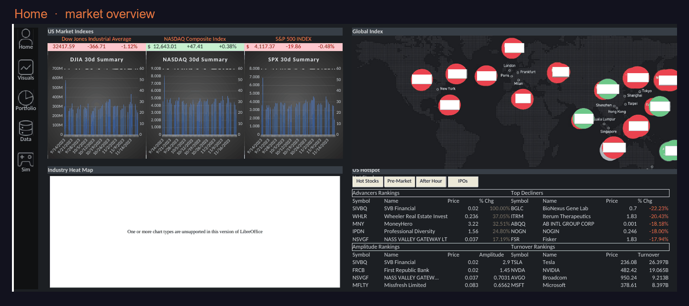
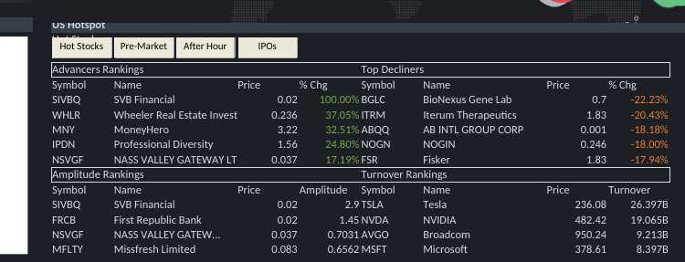
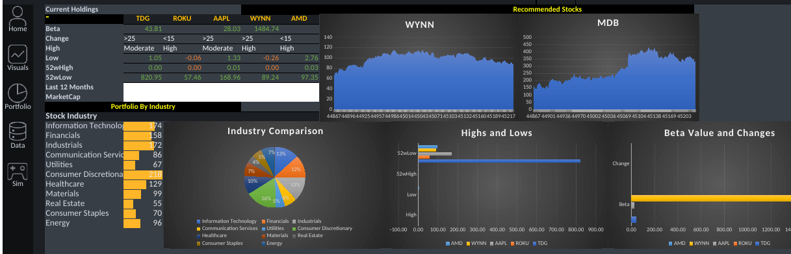
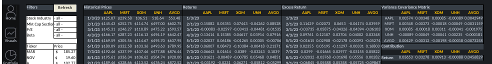
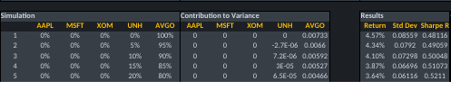
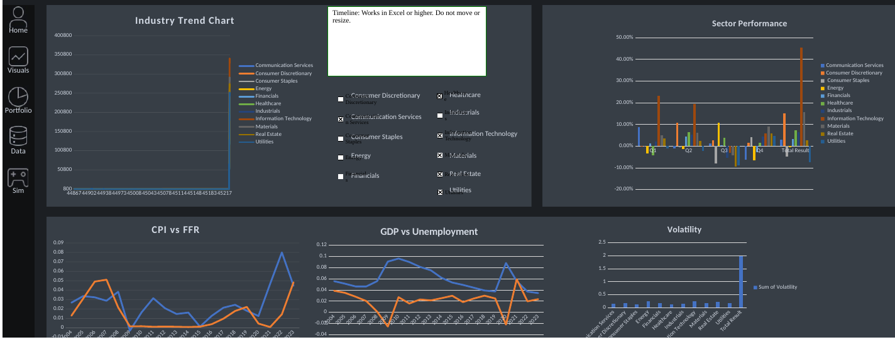
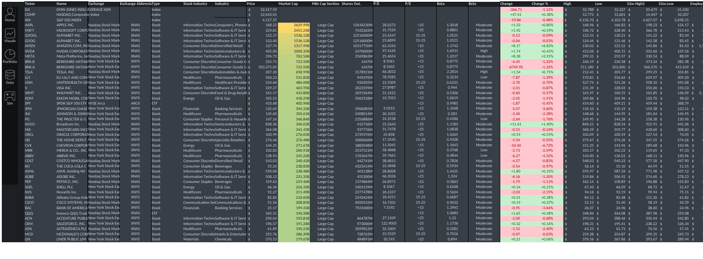

Data · Excel/VBA
Portfolio Optimizer
A data management Excel project — an interactive Portfolio Optimization dashboard that lets anyone build a diversified, risk-adjusted portfolio and see exactly how it's built.
- Excel
- VBA automation
- data visualization
- simulation & optimization
- quantitative analysis
- data reconciliation
The problem
People who want to start investing are stuck in the middle. Professional tools (Bloomberg-grade) are complex and expensive; robo-advisors are a black box that allocates for you without teaching you anything. What's missing is a transparent, hands-on tool that lets you build a portfolio yourself — and learn the method while you do it.
From a blank sheet to a tool
It began as a plain spreadsheet and grew into a dashboard. The design converged on three pillars:
- Navigation & interface — four buttons wired to VBA macros jump between purpose-built screens, turning a pile of worksheets into a navigable app. (I built this layer, including the VBA.)
- A live data source — the last sheet pulls real market data straight from Yahoo Finance via refreshable web queries and reconciles it into one consistent master table, so the whole dashboard runs on live numbers. (I proposed this data-source design.)
- Novice-first visualization — the most intuitive views for people who don't know finance: the three headline indices, sector overviews, and gainers/losers.
The portfolio is personalized: you pick your own holdings and run a simulation that returns a suggested allocation — guided, not guesswork.

Interface walkthrough
Home — market overview & navigation
The landing screen. Live snapshots of the Dow, NASDAQ, and S&P 500, each with a 30-day trend chart, plus a global-index world map, an industry heat map, and live gainers/losers rankings. The icon rail on the left (VBA-driven) jumps to every other screen.


Portfolio — build & analyze your holdings
Your current holdings with full fundamentals (Beta, 52-week high/low, market cap, P/E), a recommended-stocks panel with price-trend charts, and your portfolio broken down by industry — pie, highs/lows, and Beta comparisons across your names.

Simulation — the mean-variance engine
The analytical core. Filter the stock universe (industry, market-cap, P/E, Beta), then the model computes monthly returns, excess returns, a full variance-covariance matrix, and each holding's contribution to risk — the machinery behind Modern Portfolio Theory.

It then runs weight scenarios and reports each portfolio's return, standard deviation, and Sharpe ratio to find an efficient mix.

Visuals — macro & sector context
So an individual stock isn't judged in isolation: an industry trend chart, sector performance, CPI vs. Fed Funds Rate, GDP vs. unemployment, and volatility by sector — with sector filters to focus the view.

Data — the master database
The engine room: one clean table of every tracked security — ticker, exchange, sector, price, market cap, shares outstanding, P/E, Beta, 52-week range, employees, and headquarters — fed by the Yahoo Finance queries and read by every other screen.

How it works
- Modeling: Markowitz mean-variance optimization — a variance-covariance matrix (
COVARIANCE.S), portfolio weights and variance viaSUMPRODUCT, Beta, log returns (LN), and future-value projection (FV). - Scale: ~29,000 formulas across the workbook; 104 charts and 42 pivot tables.
- Data pipeline & reconciliation: refreshable Yahoo Finance web queries, reconciled into one consistent master table that every screen reads from — matching tickers, prices, and fundamentals across sources so the dashboard never shows conflicting numbers.
- Interaction: VBA macros and command buttons for navigation; slicers and filters that recompute live.
Skills demonstrated
- Simulation & optimization — scenario-based portfolio simulation and mean-variance optimization (Solver) to find an efficient mix.
- Quantitative analysis — variance-covariance matrix, Beta, excess return, volatility, and Sharpe ratio.
- Data visualization — a multi-screen dashboard: 100+ charts, a global-index map, and industry heat maps.
- VBA automation — macro-driven navigation and interactive, recomputing controls.
- Data reconciliation — consolidating live, multi-source market data into one consistent master table.
- Excel engineering — ~29,000 formulas, pivot tables, dynamic arrays, and robust lookups.
The extension — from Excel toward the web
Excel proved the logic; the natural next step is to put it in front of anyone, no spreadsheet required. Bringing it to the web would keep the simulation and the underlying model, trade the raw spreadsheet surface for a guided, novice-friendly flow, and — with an AI layer — let a user state a goal in plain language ("a medium-risk portfolio for a home in 5 years") and have the model translate it into constraints, optimize, and explain each step — directly answering the "black box" problem we started with.
Result & recognition
A working end-to-end tool — pick stocks, build, simulate, visualize, and get an allocation — plus an elevator pitch. The project earned the Analytics Excellence Award, given for excellence in applying analytical techniques to dashboard development.